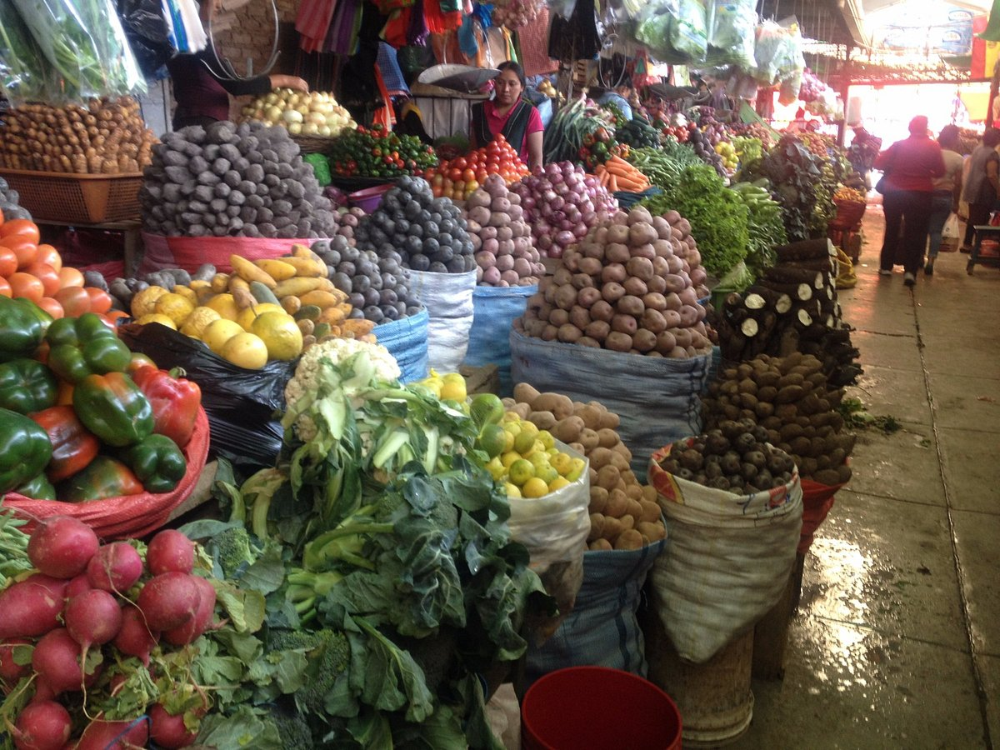
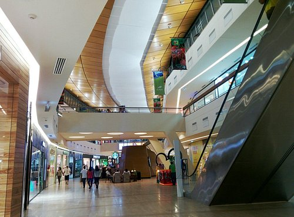
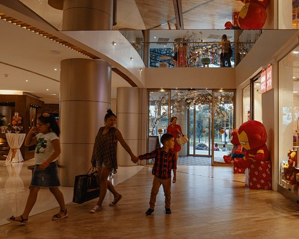
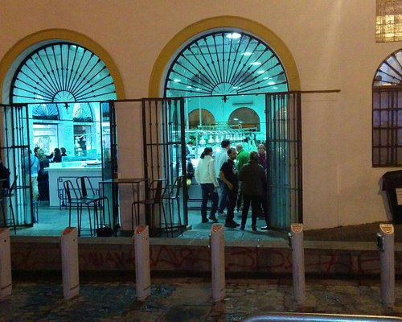

Un mercado interesante. Es un lugar donde puedes comprar artesanías, recuerdos, alimentos, ropa, zapatos, tenis, accesorios, etc... Es bastante extenso y es necesario dedicarle un tiempo para ver otra parte del folclore boliviano.

Las Brisas Centro Comercial
Lugar muy limpio, bonitas tiendas, no son baratas. Buen patio de comidas y un boulebar excelente con variedad de comidas y locales.

Beauty Plaza Mall
Excelente iniciativa de dedicar un día a las chicas. “Que buen plan” nos ha invitado para compartir una noche súper agradable en el restaurante El Tomate, con buena música en vivo, deliciosa burrata y una pizza riquísima, con borde relleno

Mercado-Feria Mutualista
Es un mercado tipico boliviano ,donde predomina la maezcla general de productos y cosas.Venta de todo tipo y servicios

Sunday Textile Market
Lisdos textiles de diferente tamaño, a gusto del cliente, variedad de colores y formas.